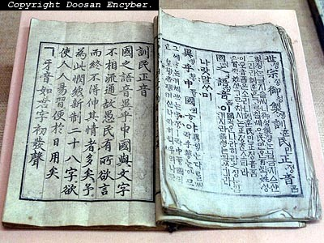

세계적으로 자기네 문자를 만들어서 쓰는 나라는 우리나라 밖에 없다고들 한다.
사실여부를 떠나서 얼핏 생각하기에도 문자를 만들어 쓴다는건 참 대단한거다.
물론 모든 문자가 인간에의해 만들어지긴 했지만 한글은 의도된 창조가 아닌가?
프로그래머의 입장에서 봤을 때 한글은 참으로 놀라운 언어다.
이제부터 한가지씩 그 놀라움을 입증해 보이겠다.
★먼저 키보드를 보자. (이 글이 '키보드편' 이다)
＊한글
한글은 자음과 모음으로 구성되어 있고 각각 초,중,종성으로 나뉘어 사용된다.
요즘 흔히 사용되는 한글 자판인 2벌식 자판을 보면 왼손에는 자음. 오른손에는 모음이 할당되어 있다. 자음 14버튼, 모음 11버튼이다. 자주 사용되는 특수문자들이 오른손 뒤편에 배치되어 있다.
말했드시 한글은 초,중,종성으로 쓰이기 때문에 자음->모음->자음 의 순으로 타이핑하게 된다. 문장들을 살펴보면 대체로 종성(받침)이 있는 글자가 25% 정도 되는것을 볼 수 있다.
따라서 75% 는 자음->모음->자음->모음... 이런식으로 왼손과 오른손이 번갈아 치게 되는 것이다.
＊영문(알파벳)
요즘 많이 사용되는 영문 자판은 qwerty(쿼티라고 부른다) 라고 해서 타자기에서 유래되었다. 영문을 자주 타이핑하다보면 느낄수 있는 것은 이 자판이 매우 불편하다는 것이다.
실제로 이 자판 배열은 자주쓰는 순이나 알파벳 순으로 배치된것이 아니다. 우습게도 타자기의 구조상 이웃한 문자끼리 핀이 엉키는 문제를 막기 위해서 자주 반복되는 문자를 최대한 멀리 배치한 구조인 것이다.
영어권에서 만들어진 자판이 우리 글에서 더 빛을 발휘한다.
실제로 영타는 아무리 빨라도 한타보다 느리다. 한국인이라서가 아니다. 좌우 손의 배치 때문이다.
이 문제는 한글이 키보드에 적용된 시기가 늦기 때문이라고도 볼 수 있다.
지금의 키보드가 완성된 이후에 적용시켰기 때문에 보다 효율적으로 배치할 수 있었던거다.
하지만 늦게 적용시켰다고 모든 문자가 이처럼 효과적일까?
＊일본어
일본어 문자(히라가나, 가타가나, 가나, 이후 '일본어')를 보자. 음이 50가지다.
탁음과 반탁음은 제외한 숫자다. 뭐 안쓰는 글자 두개 떼면 48자로 볼 수 있다.
이 48자를 키보드에 어떻게 배치할까? 양손에 20여개를 배치해야 한다.
키보드의 키(버튼)가 그렇게 많을까? 제어키(Tab, Caps Lock, Shift, Ctrl, Alt 등)만 제외하고 숫자와 특수문자까지 포함해도 47개 밖에 되지 않는다. 안타깝게도 한개가 모자란다..
결국 일본어 자판은 버튼이 한개 추가되었다. 그래서 48개 모두 삽입 완료!...
정말 성공한것일까? 숫자는? 특수문자들은?
게다가 일본어는 50개의 글자로 모든 단어들을 만들다보니 일본어 만으로는 문맥의 구별이 어렵다. 게다가 일본어는 띄어쓰기가 없다... 이건 왜 없는거지?? 아무튼 일본어는 한자 없이 의미를 정확히 전달할 수 없는 구조다.
일본어 잡지를 보면 한자가 무더기로 발견된다. 어쩔 수 없다. 이게 일본어의 한계다.
우리말도 한자어가 많다지만 사실 한글로만 표기해도 크게 혼란스럽지 않다.
누가 문장중에서 '사과(apple)'와 '사과(apology)'를 혼동한단 말인가? 하지만 일본어는 한자 없이는 어디까지가 단어인지조차 구분하지 못한다.
사실 일본어 자판은 이렇게 숫자와 특수문자를 다 쓰기보다는 영문으로 입력해서 변환하는 방법을 많이 사용한다. 예를 들어 일본어 '가' 는 영어로 'ga' 라고 입력해서 변환시키는 것이다. 얼핏 생각해도 무척 불편하다. 그래도 그들은 잘 쓴다.
＊한자(중국어)
한자는 그 종류가 몇개인지 정확히 알지 못하겠다. 우리나라 생활한자 1800자는 그야말로 새발의 피다. 대충 알기로는 10만자 이상이라고 한다. 이걸 다 외우는 사람이나 있을까?
자. 이걸 어떻게 키보드에 배치할까? 글자 단위로 배치는 불가능하다. 부수별로 나눠도 현재의 키보드로는 역부족이다. 결국 택한 방법은 일본어와 마찬가지로 발음을 변환하는 것이다.
'水(물 수)' 라는 글자를 입력하려면 영어로 'su'라고 입력해서 변환하는 것이다. 물론 중국에선 발음이 '수'가 아닐 지도 모른다.
＊기타
솔직히 아랍권의 이상한 문자들은 키보드로 칠 수 있는지조차 잘 모르겠다.
지구상에는 문자보다 언어가 많다. 한가지 문자로 여러 언어가 함께 쓰는 것이다.
덕분에 영어권이 아니더라도 알파벳을 사용하는 (조금 변조되었더라도) 나라들은 영문 자판을 큰 문제 없이 사용하고 있다.
참 길게도 떠들었는데 요약하면 한글은 그 구성(자음/모음, 초/중/종성)으로 인해 키보드에 매우 적합한 문자가 되었다는 것이다.
적어도 내가 아는 선에서는 한글이 왓따다.
다음에는 화면 출력 - 폰트(Font)편이 이어진다.